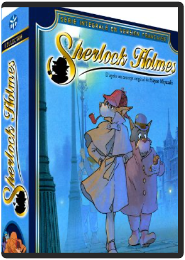
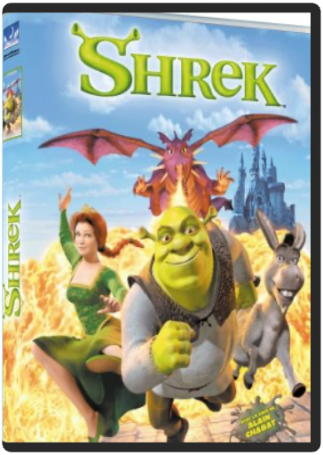

sevendavid fincher sevendavid fincher  Ce film est le plus viscéralement effroyable depuis Le Silence des agneaux. Seven est basé sur une idée à la fois horrible et ingénieuse. Les meurtres, inspirés par les sept péchés capitaux, donnent lieu à une mise en scène grotesque et pathétique. Du générique d'introduction à l'abominable et inévitable dénouement, David Fincher nous immerge dans une ambiance urbaine glauque et crépusculaire où tout semble rouiller, moisir et pourrir. L'air y est lourd et glacial. Morgan Freeman et Brad Pitt sont tous deux brillants dans les rôles des détectives qui retrouveront la trace du tueur sans s'apercevoir que ce dernier est lui aussi sur leurs pas. On retrouve également l'excellente Gwyneth Paltrow et le non moins remarquable Kevin Spacey, mais les vraies stars du film sont Fincher et l'ambiance terriblement oppressante qu'il a su créer. Faites de beaux rêves. —Jim Emerson sherlock holmes, édition intégrale collectorhayao miyazaki SHERLOCK HOLMES - INTÉGRALE - VF - EDITION COLLECTOR shrekandrew adamson Bienvenue dans le monde du conte de fée irrévérencieux. Shrek est un pied de nez à toutes les merveilleuses histoires de notre enfance. En contant les aventures d'un ogre vert, d'un âne et d'une princesse aussi mal dégrossie que Blanche-Neige était délicate, le studio de production de Steven Spielberg a misé sur la pure fantaisie et l'humour décalé. Ce qui donne une petite merveille du genre. Tout au long de son parcours, Shrek rencontre des personnages magiques pris à contre-courant : un pseudo-prince charmant aussi teigneux que sa taille est petite, un impressionnant dragon qui se révèle en fait être une grande amoureuse, une princesse adepte du rot et cachant un terrible secret. |


 Made with Delicious Library
Made with Delicious LibraryNancy, State zipflap congrotus delicious library Thomas, Julien